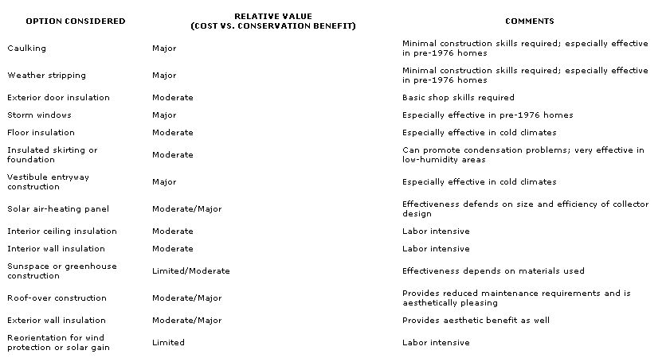

You can do something about your domicile's energy-saving shortcomings. But the trick is knowing which improvements are worth the money.
What makes mobile homes apt to consume more energy than site-built houses? Well, this problem is a result of precisely the same factors that make these dwellings inexpensive and transportable. Lightweight construction materials, thin-wall design, and a long, narrow shape combine to reduce thermal mass, lessen insulation values, and increase the surface-area-to-floor-area ratio (which promotes thermal loss through the shell). Furthermore, the process of transporting the home from manufacturer to dealer to owner takes its toll on the tenacity of the unit, opening joints and junctures that aren't always resealed once the structure is permanently installed. And finally, the lack of suitable perimeter foundations often leaves heating and plumbing ducts unprotected from extreme temperatures. It all adds up to that familiar too cold or too hot feeling.
To be sure, there are minor-and major-steps that can be taken to correct these inher ent faults, or at least to reduce their effects. The chart below lists (in order of increasing difficulty) the weatherization or construction techniques commonly used to improve the thermal efficiency of mobile homes and indicates their relative value in terms of cost per Btu saved. Naturally, a simplified summarization such as this can't begin to address such variables as region, siting, and area costs, but it should help to put things in perspective.
|
 |
|
|